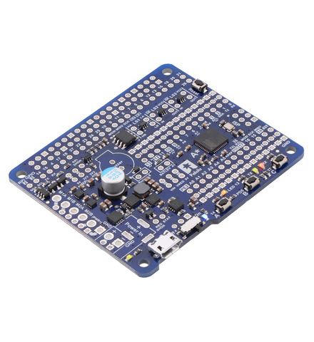

Bir robot kontrolörü ne yapar?
Beyinciğe benzer. Robot denetleyici, endüstriyel robot kolunun hareketlerini kontrol etmek amaciyla robota bağlanan bir bilgisayar sistemidir. Kontrolör,
robot koluna ek olarak, uç efektörden ve robotun çalişma alani içinde parazit oluşmasini önlemekten de sorumludur.
